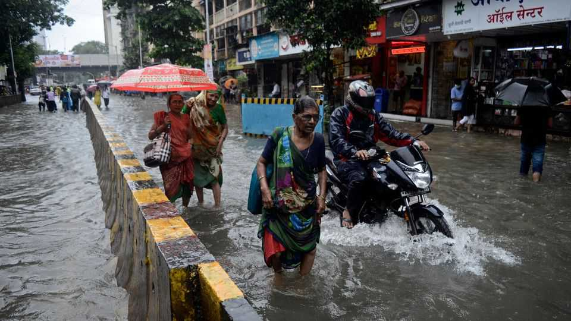

Indians can now bet on the monsoon
Heatwaves may be more important
June 4th 2026

BY THE MIDDLE of June Mumbai, India’s financial capital, should be drenched. The south-west monsoon, the seasonal storm which provides most of the year’s water in South Asia, will bring torrential downpours to the city. Street food-hawkers and builders will curse. Slum-dwelling migrant workers may head home to villages to wait for the rains to pass. Some businesspeople and financiers, meanwhile, will be patting damp pockets full of rupees. On May 29th India’s National Commodity and Derivatives Exchange (NCDEX) allowed traders to start placing financial bets on whether each month of this year’s monsoon will be wetter or drier in Mumbai than the average of the past 30 years.
Weather derivatives, which pay out based on some clearly defined meteorological measurement, have been around in America since the mid-1990s. Earlier deregulation of American energy utilities led to a niche market in temperature derivatives, which companies could use to hedge their exposure to “cooling degree days”, when air-conditioning demand spiked, or “heating degree days”, when households and businesses fired up their radiators.
In contrast to conventional forms of insurance, holders have no need to prove that they have suffered a loss themselves. Instead, derivative contracts trigger automatically when some pre-agreed parameters are met. These could be a threshold temperature, wind speed or other variable recorded in a particular place—typically an official weather station. This avoids lengthy delays in getting money to where it is most needed. Last year Jamaica’s government got a $150m payout after Hurricane Melissa’s central pressure and storm path met the criteria defined in the “catastrophe bond” the Caribbean country had issued.
Rainfall derivatives are less common. The Chicago Mercantile Exchange, based in a city famous for its bone-chilling wind, launched rainfall, snowfall and frost derivatives in 2011 but scrapped them in 2014 for lack of demand. In the rich world, farmers, the most obvious beneficiaries of such protection, typically rely on crop insurance and other more conventional instruments. India’s legions of smallholders are unlikely to be rushing into the Mumbai monsoon derivatives (not least because they care about the monsoon’s effect on their tiny patch of land somewhere in the Indo-Gangetic Plain, not the coastal metropolis).
Instead, NCDEX is expecting custom from large corporations. Banks with portfolios of agricultural loans may be one group of buyers. Hydropower companies, whose dams catch water from across entire river basins, may be another. Solar-power producers, it suggests, could be sellers. So could hedge funds.
Whoever enters the contracts from either side must be ready to get soaked. Weather derivatives are even harder to price than stock options or commodities futures. The financial maths used in pricing conventional derivatives do not work because there is no underlying asset. Modellers must rely on weather forecasts. These are harder to get right for rain, which is sensitive to small atmospheric changes, than for heat. Meteorologists trying to forecast monsoon rains contend with “bursts”, when clouds suddenly dump their cargo of rain in one spot, and “vagaries”, the feedback between the land and the air which can lead to sudden shifts in the timing and intensity of rain.
NCDEX may also have focused on the wrong weather-related risk to start with. Temperature seems much more pertinent to India than rain. According to Pranjul Bhandari of HSBC, a bank, tracking it is now sufficient to forecast India’s food inflation. Reservoir levels, which are vulnerable to evaporation in extreme heat, matter more than rainfall to farmers who use irrigation. In contrast to grains, which can be stockpiled after a good monsoon like last year’s, perishable fruits and vegetables die in the heat and cows produce less milk. NCDEX is planning to launch a heat-linked contract one day. India’s weather-exposed businesses are hoping this financial innovation, like the monsoon, arrives soon.■
For more expert analysis of the biggest stories in economics, finance and markets, sign up to Money Talks, our weekly subscriber-only newsletter.